Anush Tadevosyan
08/04/2023
“Exploring Crime in United States”
In this project, we will answer various question about crimes in US states for a wide range of years
Link to Dataset: https://corgis-edu.github.io/corgis/csv/state_crime/
Link to Forum “Crime in DC”: https://www.reddit.com/r/washingtondc/comments/xx6g4e/crime_in_dc/
Link to Forum “Is New Hampshire safe for minorities?”: https://www.reddit.com/r/newhampshire/comments/wafenm/is_new_hampshire_safe_for_minorities/
The reason for choosing this particular dataset is my personal interest in crime stories and documentaries. I am curious to see what can we find and what will be the conclusions that we will land upon after final findings. The end goal of this project is to find the safest state and the most dangerous state in terms of crimes in United States (according to dataset) and to predict how the rate of crimes will change in those states in future!
Methods
Data Presentation & ExplorationBasic Information about the dataset: The dataset classifies crimes into two groups: property & violent crimes. Property crime refers to burglary, larceny, and motor related crime while violent crime refers to assault, murder, rape, and robbery. These reports range from the year 1960 to 2019. With this in mind, let’s understand and explore our data.
!pip install pmdarima
Requirement already satisfied: pmdarima in /opt/conda/lib/python3.10/site-packages (2.0.3)
Requirement already satisfied: joblib>=0.11 in /opt/conda/lib/python3.10/site-packages (from pmdarima) (1.3.1)
Requirement already satisfied: Cython!=0.29.18,!=0.29.31,>=0.29 in /opt/conda/lib/python3.10/site-packages (from pmdarima) (3.0.0)
Requirement already satisfied: numpy>=1.21.2 in /opt/conda/lib/python3.10/site-packages (from pmdarima) (1.25.0)
Requirement already satisfied: pandas>=0.19 in /opt/conda/lib/python3.10/site-packages (from pmdarima) (1.5.3)
Requirement already satisfied: scikit-learn>=0.22 in /opt/conda/lib/python3.10/site-packages (from pmdarima) (1.3.0)
Requirement already satisfied: scipy>=1.3.2 in /opt/conda/lib/python3.10/site-packages (from pmdarima) (1.11.1)
Requirement already satisfied: statsmodels>=0.13.2 in /opt/conda/lib/python3.10/site-packages (from pmdarima) (0.14.0)
Requirement already satisfied: urllib3 in /opt/conda/lib/python3.10/site-packages (from pmdarima) (1.26.14)
Requirement already satisfied: setuptools!=50.0.0,>=38.6.0 in /opt/conda/lib/python3.10/site-packages (from pmdarima) (67.7.2)
Requirement already satisfied: python-dateutil>=2.8.1 in /opt/conda/lib/python3.10/site-packages (from pandas>=0.19->pmdarima) (2.8.2)
Requirement already satisfied: pytz>=2020.1 in /opt/conda/lib/python3.10/site-packages (from pandas>=0.19->pmdarima) (2023.3)
Requirement already satisfied: threadpoolctl>=2.0.0 in /opt/conda/lib/python3.10/site-packages (from scikit-learn>=0.22->pmdarima) (3.1.0)
Requirement already satisfied: patsy>=0.5.2 in /opt/conda/lib/python3.10/site-packages (from statsmodels>=0.13.2->pmdarima) (0.5.3)
Requirement already satisfied: packaging>=21.3 in /opt/conda/lib/python3.10/site-packages (from statsmodels>=0.13.2->pmdarima) (23.0)
Requirement already satisfied: six in /opt/conda/lib/python3.10/site-packages (from patsy>=0.5.2->statsmodels>=0.13.2->pmdarima) (1.16.0)
The dataset has 21 columns and 3115 rows. As mentioned, the dataset covers the crimes in states from the year 1960 to 2019 and we can see that half of data is for years 1990-2019
[nltk_data] Downloading package stopwords to /home/jovyan/nltk_data...
[nltk_data] Package stopwords is already up-to-date!
#total data summarycrime_data.describe()
Year
Data.Population
Data.Rates.Property.All
Data.Rates.Property.Burglary
Data.Rates.Property.Larceny
Data.Rates.Property.Motor
Data.Rates.Violent.All
Data.Rates.Violent.Assault
Data.Rates.Violent.Murder
Data.Rates.Violent.Rape
Data.Rates.Violent.Robbery
Data.Totals.Property.All
Data.Totals.Property.Burglary
Data.Totals.Property.Larceny
Data.Totals.Property.Motor
Data.Totals.Violent.All
Data.Totals.Violent.Assault
Data.Totals.Violent.Murder
Data.Totals.Violent.Rape
Data.Totals.Violent.Robbery
count
3115.000000
3.115000e+03
3115.000000
3115.000000
3115.000000
3115.000000
3115.000000
3115.000000
3115.000000
3115.000000
3115.000000
3.115000e+03
3.115000e+03
3.115000e+03
3.115000e+03
3.115000e+03
3.115000e+03
3115.000000
3115.000000
3115.000000
mean
1989.544141
9.708502e+06
3542.202311
876.532520
2322.659133
343.011300
397.877047
237.365040
6.477207
30.179872
123.853258
3.560081e+05
8.977698e+04
2.275827e+05
3.864856e+04
4.594917e+04
2.659748e+04
663.911717
3034.240449
15653.541894
std
17.299570
3.506750e+07
1418.191397
446.531611
897.934463
221.654068
287.498896
159.336737
5.886449
16.694626
143.261882
1.321823e+06
3.376635e+05
8.460659e+05
1.469896e+05
1.759960e+05
1.032963e+05
2437.666178
11714.612850
60348.473626
min
1960.000000
2.261670e+05
573.100000
126.300000
293.300000
28.400000
9.500000
3.600000
0.200000
0.800000
1.900000
3.147000e+03
7.510000e+02
1.489000e+03
1.780000e+02
3.700000e+01
1.400000e+01
1.000000
6.000000
8.000000
25%
1975.000000
1.279156e+06
2472.650000
535.000000
1663.800000
185.600000
217.200000
124.000000
3.100000
18.500000
42.700000
3.974500e+04
9.613500e+03
2.619500e+04
3.227000e+03
3.318000e+03
2.056000e+03
48.000000
328.000000
816.500000
50%
1990.000000
3.358000e+06
3438.400000
796.600000
2275.700000
288.900000
342.200000
205.100000
5.400000
28.800000
93.800000
1.092840e+05
2.703800e+04
7.142300e+04
9.468000e+03
1.154800e+04
6.755000e+03
186.000000
931.000000
3256.000000
75%
2005.000000
6.082836e+06
4439.100000
1133.850000
2877.500000
437.200000
518.250000
319.350000
8.400000
39.800000
152.800000
2.253325e+05
5.562000e+04
1.461155e+05
2.124150e+04
2.880400e+04
1.756700e+04
464.000000
1930.000000
8337.000000
max
2019.000000
3.282395e+08
9512.100000
2906.700000
5833.800000
1839.900000
2921.800000
1557.600000
80.600000
161.600000
1635.100000
1.296112e+07
3.795200e+06
8.142228e+06
1.661738e+06
1.932274e+06
1.135607e+06
24703.000000
139815.000000
687732.000000
#first major crime group summary: propertycrime_data['Data.Totals.Property.All'].describe()
count 3.115000e+03
mean 3.560081e+05
std 1.321823e+06
min 3.147000e+03
25% 3.974500e+04
50% 1.092840e+05
75% 2.253325e+05
max 1.296112e+07
Name: Data.Totals.Property.All, dtype: float64
#second major crime group summary: propertycrime_data['Data.Totals.Violent.All'].describe()
count 3.115000e+03
mean 4.594917e+04
std 1.759960e+05
min 3.700000e+01
25% 3.318000e+03
50% 1.154800e+04
75% 2.880400e+04
max 1.932274e+06
Name: Data.Totals.Violent.All, dtype: float64
Descriptive Statistics: If we look at the mean number of property and violent crimes over the years, property crimes are more common. The mean rate of property crimes also exceeds that of violent crimes. This is good news to us as we can already tell that the crimes that directly, phsyically affect people are less than other types of crimes historically!
Correlations: As we can see from the results, there is a strong correlation in the size of population and number of crimes. This indicates, that generally, as the population of a state increases, the total number of property/violent crimes tends to increase
Encoding Categorical Values: Above, we encoded the variable state, as later, it might be useful when doing time-series analysis, maybe using additional data related to states etc
# See how much data per state, can the dataset be skewed? how many rows per state?number_of_rows_for_state = []list_of_state_names = []for key,value in state_encoding_mapping.items(): list_of_state_names.append(key) key_data = crime_data[crime_data['State'] == key] number_of_rows_for_state.append(key_data.shape[0])plt.bar(state_encoding_mapping.values(),number_of_rows_for_state)plt.xlabel('State')plt.ylabel('Number of rows (info) for state')plt.title('States and Number of Rows for them')plt.show()
As we can see, there are 60 entries per state (besides New York) so we don’t have to worry about data being skewed or bias (disproportionally number rows for a state compared to other states). In this analysism we won’t consider 5 less entries to be bias for the purposes of this research
# Scatter plot: Property crimes vs Year vs Encoded Statesplt.figure(figsize=(10, 6))plt.scatter(crime_data['Year'], crime_data['Data.Rates.Property.All'], c=crime_data['State_Encoded'], cmap='viridis')plt.colorbar(label='Encoded State')plt.xlabel('Year')plt.ylabel('Property Crime Rates')plt.title('Scatter Plot: Year vs. Property Crime Numbers with Encoded State')plt.show()
# Scatter plot: Violent crimes vs Year vs Encoded Statesplt.figure(figsize=(10, 6))plt.scatter(crime_data['Year'], crime_data['Data.Rates.Violent.All'], c=crime_data['State_Encoded'], cmap='viridis')plt.colorbar(label='Encoded State')plt.xlabel('Year')plt.ylabel('Violent Crime Rates')plt.title('Scatter Plot: Year vs. Violent Crime Numbers with Encoded State')plt.show()
Data Disrtibution & Outliers: Through scatter plots, call them outliers or states with significant crime, we can see that total rate of violent crimes and total rate of property crimes is significantly larger in one of the state, which is in this group - ‘Alabama’: 0, ‘Alaska’: 1, ‘Arizona’: 2, ‘Arkansas’: 3, ‘California’: 4, ‘Colorado’: 5, ‘Connecticut’: 6, ‘Delaware’: 7, ‘District of Columbia’: 8, ‘Florida’: 9, ‘Georgia’: 10, ‘Hawaii’: 11, ‘Idaho’: 12, ‘Illinois’: 13, ‘Indiana’: 14, ‘Iowa’: 15, ‘Kansas’: 16, ‘Kentucky’: 17, ‘Louisiana’: 18, ‘Maine’: 19, ‘Maryland’: 20 Through analysis later, we will figure out which state exactly that is.
Through box plot, we can see that over the years and over the states, the rate of property crimes is larger than the rate of violent crimes (rates per 100,000 population).We can also see that there is a fair amount of outliers for both of the crime rate, which suggests that there has been years and states, where during those years, that specific state was an “exception” compared to others and had a higher crime rate. Note that the outliers for violent crime rates are more tightly stacked together, suggesting that the rate of violent crimes faced way more exceptions than the rate of property crimes
Analytical Process: After having some understanding of our data and exploring it, it is time to dive into the actual analysis. Based on exploration, we figured out an important point about exceptional crime rate in some states and that of states that falls between 0-20 in the Encoded State list, has a significantly higher crime rate. Now, we will analyze the graphs for each of the states and proceed to answer the main questions of this analysis, for which, we will be using “weights” to determine the safety score for each state and afterwards, using ARIMA statistical model, we will predict the future rate of crimes for those states!
Results
We will be using code to answer the following questions 1. For each state, analyze the total number of propery crimes and total number of violent crimes throughout the years of 1960-2020 2. For each state, analyze the rate of property crimes and rate of violent crime throughout the years 1960-2020. 3. Based on historical data, which state is the safest state and the most dangerous state? Rank the states 4. What will be the rate of total property crimes and total violent crimes in those two states in 2050? 5. Support findings with reddit post analyzations
# make a list of state names from crime_datastate_name_list = crime_data['State'].tolist()# get rid of duplicatesstate_name_list =list(set(state_name_list))for state in state_name_list: state_data = crime_data[crime_data['State'] == state]#create new figure and axes ax_1 figure, ax_1 = plt.subplots() ax_1.plot(state_data['Year'], state_data['Data.Totals.Property.All'], label='Property crimes', color='blue') ax_1.set_xlabel('Year') ax_1.set_ylabel('Number of property crimes', color='blue')#create twin axis ax_2 ax_2 = ax_1.twinx() ax_2.plot(state_data['Year'], state_data['Data.Totals.Violent.All'], label='Violent crimes', color='red') ax_2.set_ylabel('Number of violent crimes', color='red') max_property = state_data['Data.Totals.Property.All'].max() max_violent = state_data['Data.Totals.Violent.All'].max()# determine y axis limit y_max =max(max_property,max_violent)#make sure both y axes have the same range ax_1.set_ylim(0, y_max) ax_2.set_ylim(0, y_max) mean_population = state_data['Data.Population'].mean() plt.title(f'{state} : Mean population over the years - {int(mean_population)}') plt.show()
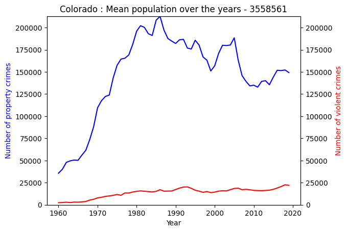
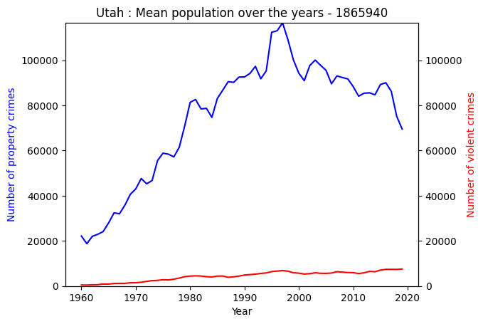
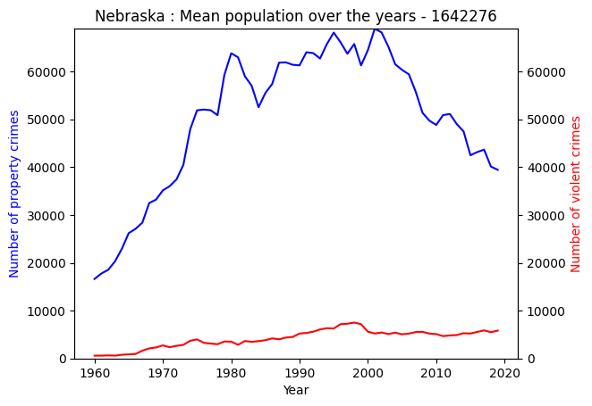
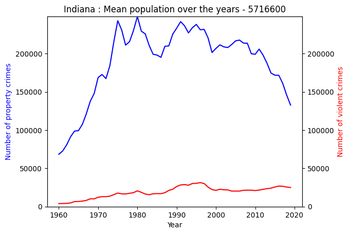
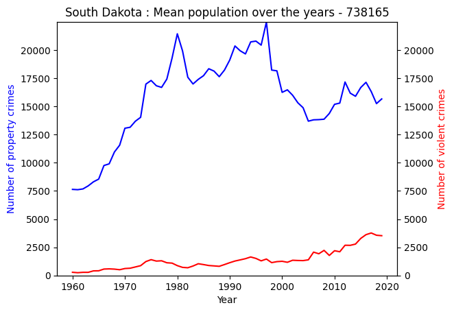
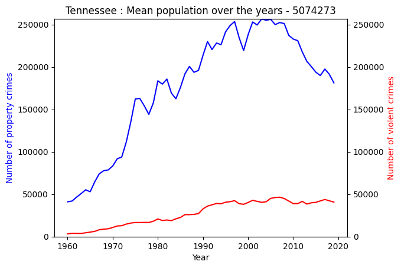
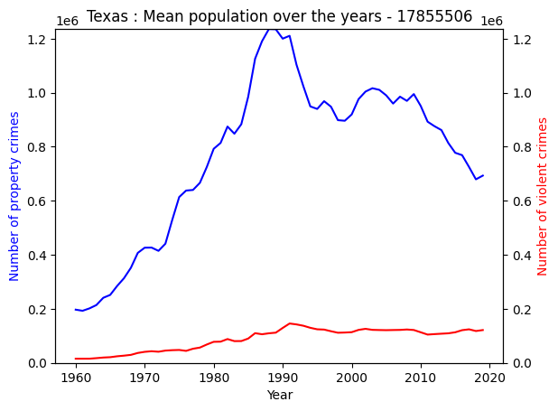
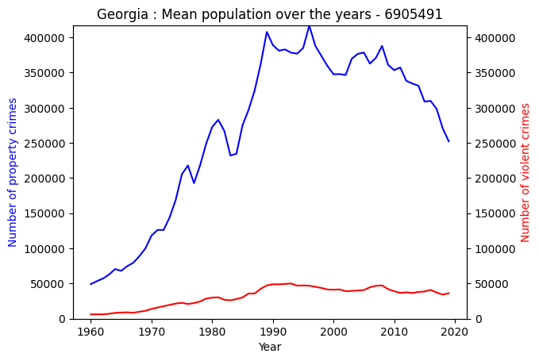
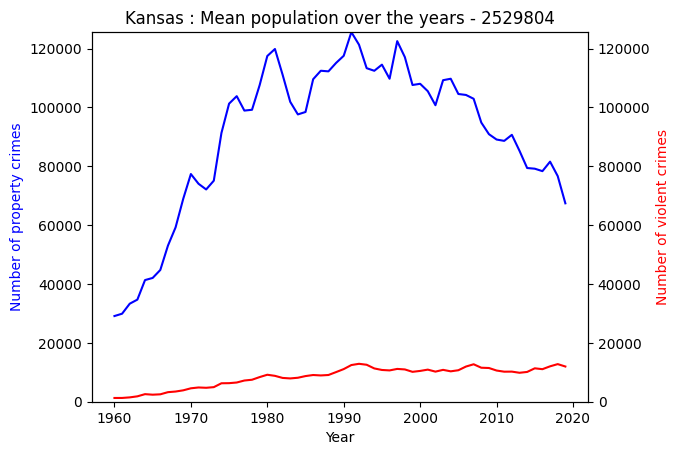
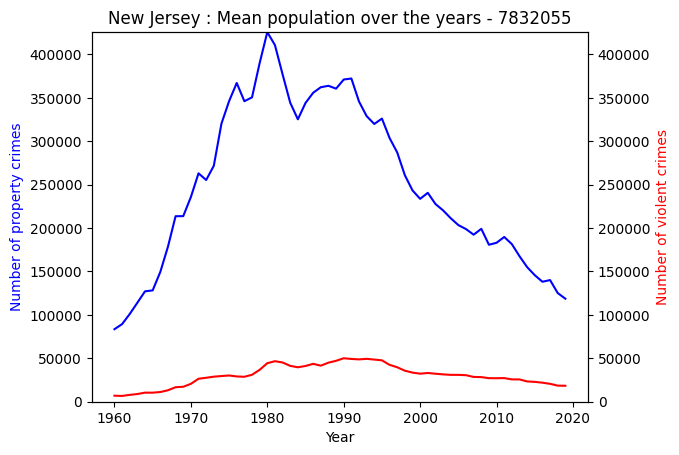
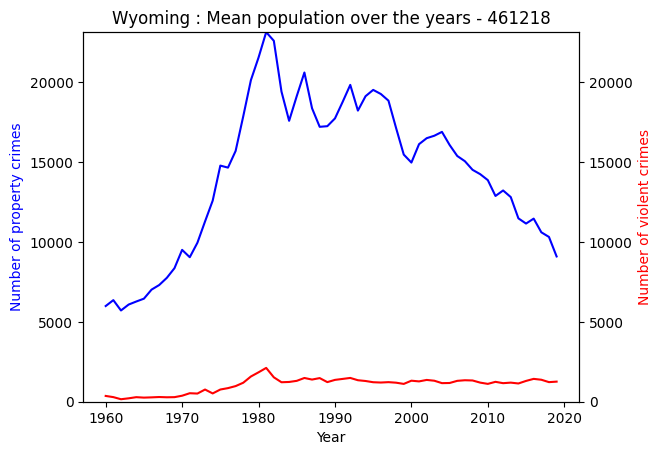
for state in state_name_list: state_data = crime_data[crime_data['State'] == state]#create new figure and axes ax_1 figure, ax_1 = plt.subplots() ax_1.plot(state_data['Year'], state_data['Data.Rates.Property.All'], label='Property crimes', color='blue') ax_1.set_xlabel('Year') ax_1.set_ylabel('Rate of property crimes', color='blue')#create twin axis ax_2 ax_2 = ax_1.twinx() ax_2.plot(state_data['Year'], state_data['Data.Rates.Violent.All'], label='Violent crimes', color='red') ax_2.set_ylabel('Rate of violent crimes', color='red') max_property = state_data['Data.Rates.Property.All'].max() max_violent = state_data['Data.Rates.Violent.All'].max()# determine y axis limit y_max =max(max_property,max_violent)#make sure both y axes have the same range ax_1.set_ylim(0, y_max) ax_2.set_ylim(0, y_max) plt.title(f'{state}') plt.show()
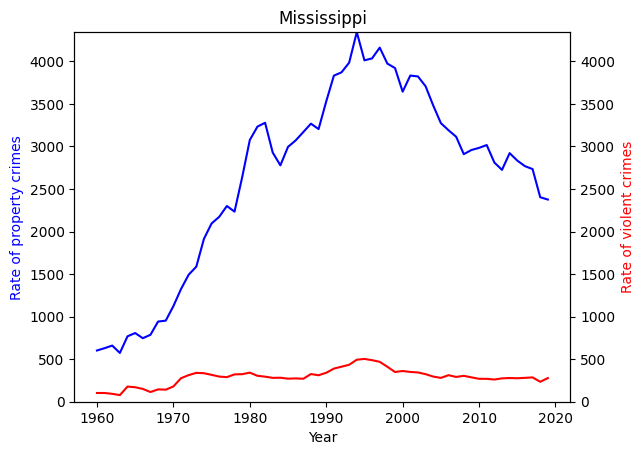
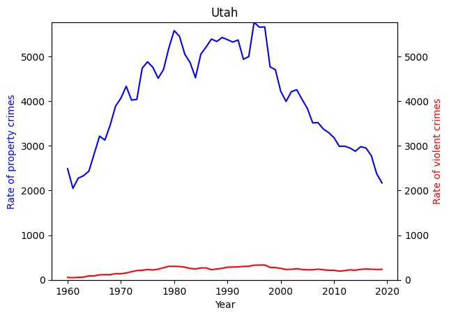
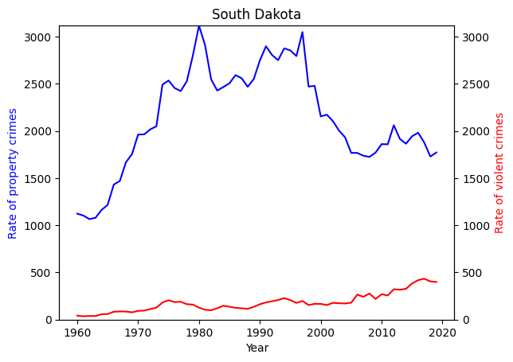
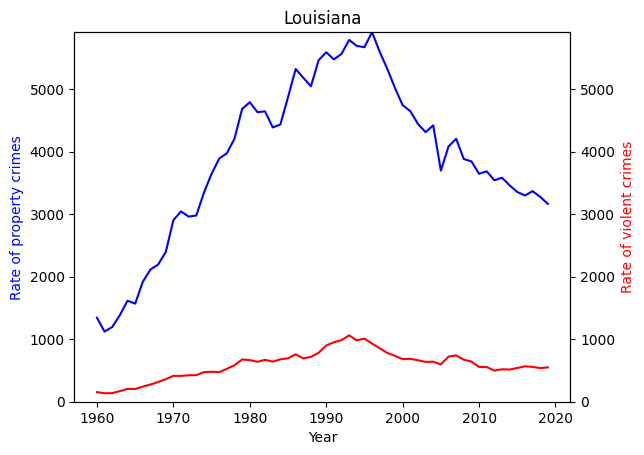
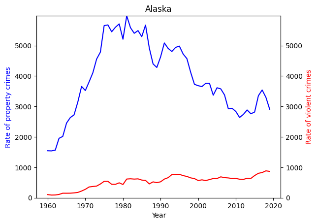
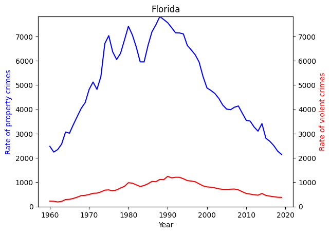
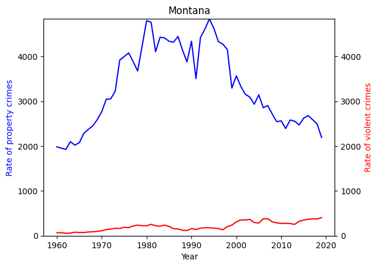
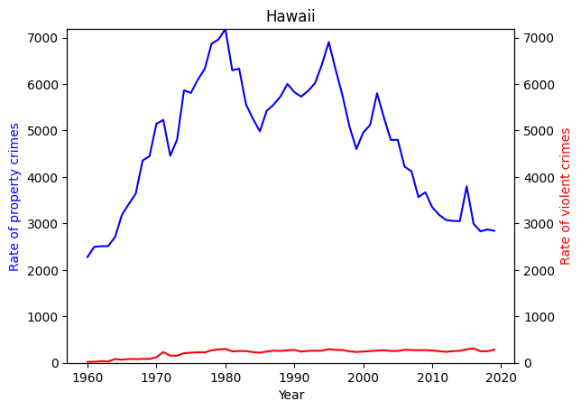
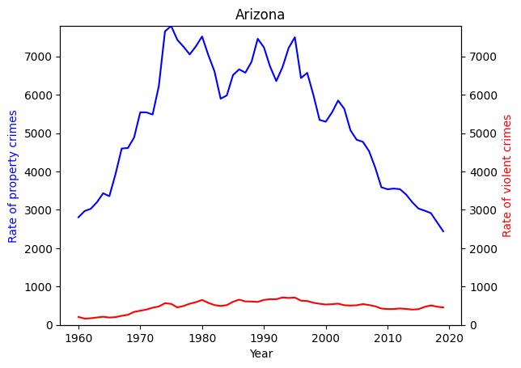
Now, after having visualization for each individual state, in case if you’re interested about a particular state, let’s find out the safest and most dangerous state according to data from years 1960-2020! I will be assigning weight of 70% to violent crimes since it involves human life, which is more precious than anything else, in this case - properties. To normalize data, we will be using MinMaxScaler from sklearn library
#MinMaxScaler methodweight_property =0.3weight_violent =0.7crime_data_sklearn = crime_data.copy()columns = ['Data.Rates.Property.All','Data.Rates.Violent.All']for col in columns: crime_data_sklearn[col] = MinMaxScaler().fit_transform(np.array(crime_data_sklearn[col]).reshape(-1,1))crime_data['Safety score'] = (crime_data_sklearn['Data.Rates.Property.All'] * weight_property) + (crime_data_sklearn['Data.Rates.Violent.All'] * weight_violent)plt.bar(crime_data['State_Encoded'],crime_data['Safety score'])plt.title('Safery Score by State')plt.xlabel('Encoded States')plt.ylabel('Safery Score')plt.show()print(f"MinMaxScaler Method: The safest state according to historical data is {crime_data.loc[crime_data['Safety score'].idxmin(), 'State']} with a safety score of {crime_data['Safety score'].min()}")print(f"MinMaxScaler Method: The most dangerous state according to historical data is {crime_data.loc[crime_data['Safety score'].idxmax(), 'State']} with a safety score of {crime_data['Safety score'].max()}")
As the result show, according to this dataset, by using rate of crime and weights given to crime type, the safest state is New Hampshire and the most dangerous state is District of Columbia!
Historical data can take us so far as we have seen from the graphs. Now let’s jump to year 2050 and try to find out what will be the most dangerous and safest state in future! For the purposes of this analysis, we will choose to use Autoregressive Integrated Moving Average (ARIMA) statistical model
new_hampshire_data = crime_data[crime_data['State'] =='New Hampshire']new_hampshire_data.set_index('Year', inplace=True)# split data into training and test sets#propertytraining_prop = new_hampshire_data.iloc[:-15, :]test_prop = new_hampshire_data.iloc[-15:, :]#violencetraining_viol = new_hampshire_data.iloc[:-15, :]test_viol = new_hampshire_data.iloc[-15:, :]# train the ARIMA modelmodel_prop = auto_arima(y=training_prop['Data.Rates.Property.All'], seasonal=False)model_viol = auto_arima(y=training_viol['Data.Rates.Violent.All'], seasonal=False)# forecast for year 2050n_periods =45predictions_prop = model_prop.predict(n_periods=n_periods)predictions_viol = model_viol.predict(n_periods=n_periods)# start from the year of test setprediction_index_prop = pd.date_range(start='2005', periods=n_periods, freq='Y')prediction_index_viol = pd.date_range(start='2005', periods=n_periods, freq='Y')# make 'data.rates.proprerty.all' into a list for error calculation#propertytest_set_property_rates = test_prop['Data.Rates.Property.All'].tolist()predictions_set_property_rates = predictions_prop.tolist()#violencetest_set_violent_rates = test_viol['Data.Rates.Violent.All'].tolist()predictions_set_violent_rates = predictions_viol.tolist()squared_diff_sum =0for test_value,pred_value inzip(test_set_property_rates,predictions_set_property_rates): squared_diff = (pred_value - test_value) **2 squared_diff_sum += squared_diffrmse = math.sqrt(squared_diff_sum /len(test_set_property_rates))print("Root Mean Squared Error for Property Rates:", rmse)squared_diff_sum_1 =0for test_value,pred_value inzip(test_set_violent_rates,predictions_set_violent_rates): squared_diff_1 = (pred_value - test_value) **2 squared_diff_sum_1 += squared_diff_1rmse_1 = math.sqrt(squared_diff_sum_1 /len(test_set_violent_rates))print("Root Mean Squared Error for Violent Rates:", rmse_1)#-----Property Crimesfig,ax=plt.subplots()ax = training_prop['Data.Rates.Property.All'].plot(legend =True,label='Training Data')test_prop['Data.Rates.Property.All'].plot(legend =True,ax=ax, label ='Test Data')ax.plot(prediction_index_prop.year,predictions_prop,label ='Predicted Data', color ='green')ax.legend()plt.grid(True)plt.title('New Hampshire: Predicted Rate of Total Property crimes in future - Year 2050')plt.xlabel('Year')plt.ylabel('Rate of Total Property Crimes')plt.show()#----Violent Crimesfig_1,ax_1=plt.subplots()ax_1 = training_viol['Data.Rates.Violent.All'].plot(legend =True,label='Training Data')test_viol['Data.Rates.Violent.All'].plot(legend =True,ax=ax_1, label ='Test Data')ax_1.plot(prediction_index_viol.year,predictions_viol,label ='Predicted Data', color ='green')ax_1.legend()plt.grid(True)plt.title('New Hampshire: Predicted Rate of Total Violent crimes in future - Year 2050')plt.xlabel('Year')plt.ylabel('Rate of Total Violent Crimes')plt.show()
/opt/conda/lib/python3.10/site-packages/statsmodels/tsa/base/tsa_model.py:836: ValueWarning: No supported index is available. Prediction results will be given with an integer index beginning at `start`.
return get_prediction_index(
/opt/conda/lib/python3.10/site-packages/statsmodels/tsa/base/tsa_model.py:836: FutureWarning: No supported index is available. In the next version, calling this method in a model without a supported index will result in an exception.
return get_prediction_index(
/opt/conda/lib/python3.10/site-packages/statsmodels/tsa/base/tsa_model.py:836: ValueWarning: No supported index is available. Prediction results will be given with an integer index beginning at `start`.
return get_prediction_index(
/opt/conda/lib/python3.10/site-packages/statsmodels/tsa/base/tsa_model.py:836: FutureWarning: No supported index is available. In the next version, calling this method in a model without a supported index will result in an exception.
return get_prediction_index(
Root Mean Squared Error for Property Rates: 328.16340617059114
Root Mean Squared Error for Violent Rates: 27.454519967879005
dc_data = crime_data[crime_data['State'] =='District of Columbia']dc_data.set_index('Year', inplace=True)# split data into training and test sets#propertytraining_prop = dc_data.iloc[:-15, :]test_prop = dc_data.iloc[-15:, :]#violencetraining_viol = dc_data.iloc[:-15, :]test_viol = dc_data.iloc[-15:, :]# train the ARIMA modelmodel_prop = auto_arima(y=training_prop['Data.Rates.Property.All'], seasonal=False)model_viol = auto_arima(y=training_viol['Data.Rates.Violent.All'], seasonal=False)# forecast for year 2050n_periods =45predictions_prop = model_prop.predict(n_periods=n_periods)predictions_viol = model_viol.predict(n_periods=n_periods)# start from the year of test setprediction_index_prop = pd.date_range(start='2005', periods=n_periods, freq='Y')prediction_index_viol = pd.date_range(start='2005', periods=n_periods, freq='Y')# make 'data.rates.proprerty.all' into a list for error calculation#propertytest_set_property_rates = test_prop['Data.Rates.Property.All'].tolist()predictions_set_property_rates = predictions_prop.tolist()#violencetest_set_violent_rates = test_viol['Data.Rates.Violent.All'].tolist()predictions_set_violent_rates = predictions_viol.tolist()squared_diff_sum =0for test_value,pred_value inzip(test_set_property_rates,predictions_set_property_rates): squared_diff = (pred_value - test_value) **2 squared_diff_sum += squared_diffrmse = math.sqrt(squared_diff_sum /len(test_set_property_rates))print("Root Mean Squared Error for Property Rates:", rmse)squared_diff_sum_1 =0for test_value,pred_value inzip(test_set_violent_rates,predictions_set_violent_rates): squared_diff_1 = (pred_value - test_value) **2 squared_diff_sum_1 += squared_diff_1rmse_1 = math.sqrt(squared_diff_sum_1 /len(test_set_violent_rates))print("Root Mean Squared Error for Violent Rates:", rmse_1)#-----Property Crimesfig,ax=plt.subplots()ax = training_prop['Data.Rates.Property.All'].plot(legend =True,label='Training Data')test_prop['Data.Rates.Property.All'].plot(legend =True,ax=ax, label ='Test Data')ax.plot(prediction_index_prop.year,predictions_prop,label ='Predicted Data', color ='green')ax.legend()plt.grid(True)plt.title('District of Columbia: Predicted Rate of Total Property crimes in future - Year 2050')plt.xlabel('Year')plt.ylabel('Rate of Total Property Crimes')plt.show()#----Violent Crimesfig_1,ax_1=plt.subplots()ax_1 = training_viol['Data.Rates.Violent.All'].plot(legend =True,label='Training Data')test_viol['Data.Rates.Violent.All'].plot(legend =True,ax=ax_1, label ='Test Data')ax_1.plot(prediction_index_viol.year,predictions_viol,label ='Predicted Data', color ='green')ax_1.legend()plt.grid(True)plt.title('District of Columbia: Predicted Rate of Total Violent crimes in future - Year 2050')plt.xlabel('Year')plt.ylabel('Rate of Total Violent Crimes')plt.show()
/opt/conda/lib/python3.10/site-packages/statsmodels/tsa/base/tsa_model.py:836: ValueWarning: No supported index is available. Prediction results will be given with an integer index beginning at `start`.
return get_prediction_index(
/opt/conda/lib/python3.10/site-packages/statsmodels/tsa/base/tsa_model.py:836: FutureWarning: No supported index is available. In the next version, calling this method in a model without a supported index will result in an exception.
return get_prediction_index(
/opt/conda/lib/python3.10/site-packages/statsmodels/tsa/base/tsa_model.py:836: ValueWarning: No supported index is available. Prediction results will be given with an integer index beginning at `start`.
return get_prediction_index(
/opt/conda/lib/python3.10/site-packages/statsmodels/tsa/base/tsa_model.py:836: FutureWarning: No supported index is available. In the next version, calling this method in a model without a supported index will result in an exception.
return get_prediction_index(
Root Mean Squared Error for Property Rates: 681.0253039858885
Root Mean Squared Error for Violent Rates: 189.75492779963125
As we can see, the test values and predicted value differ by 300 crimes To-Do: Discuss the results
Through Google Search about the two states, going into reddit to see what actual people say about the two states, we found interesting results
#website - url - https://www.reddit.com/r/washingtondc/comments/xx6g4e/crime_in_dc/withopen('reddit_DC.txt', 'r') asfile: dc_reddit_content =file.read()dc_reddit_content = dc_reddit_content.lower()sia = vader.SentimentIntensityAnalyzer()dc_reddit_word_token = word_tokenize(dc_reddit_content)myStopWords = stopwords.words('english')#get rid of stopwordsdc_reddit_content_nostop = [w for w in dc_reddit_word_token if w notin myStopWords]#get rid of numbersdc_reddit_cleaned = [w for w in dc_reddit_content_nostop ifnot w.isdigit()]pos_word_list = []neg_word_list = []for word in dc_reddit_cleaned: score = sia.polarity_scores(word)if score['compound'] >0: pos_word_list.append(word)elif score['compound'] <0: neg_word_list.append(word)stemmed_positive_words = [PorterStemmer().stem(w) for w in pos_word_list]most_positive_words = nltk.FreqDist(stemmed_positive_words).most_common(15)most_positive_words.reverse() #so its similiar to the graphs shownstemmed_negative_words = [PorterStemmer().stem(w) for w in neg_word_list]most_negative_words = nltk.FreqDist(stemmed_negative_words).most_common(15)most_negative_words.reverse()# Positive: horizontal bar plotdf = pd.DataFrame(most_positive_words, columns=['Positive Words', 'Frequency'])color ='orange'df.plot(x='Positive Words', y='Frequency', kind='barh', legend=False, color=color)plt.title('Positive Words')plt.xlabel('Frequency')plt.ylabel('Positive Words')plt.title('Crime in DC: Positive Words')plt.show()# Negative: horizontal bar plotdf_1 = pd.DataFrame(most_negative_words, columns=['Negative Words', 'Frequency'])color_1 ='purple'df_1.plot(x='Negative Words', y='Frequency', kind='barh', legend=False, color=color_1)plt.title('Negative Words')plt.xlabel('Frequency')plt.ylabel('Negative Words')plt.title('Crime in DC: Negative Words')plt.show()
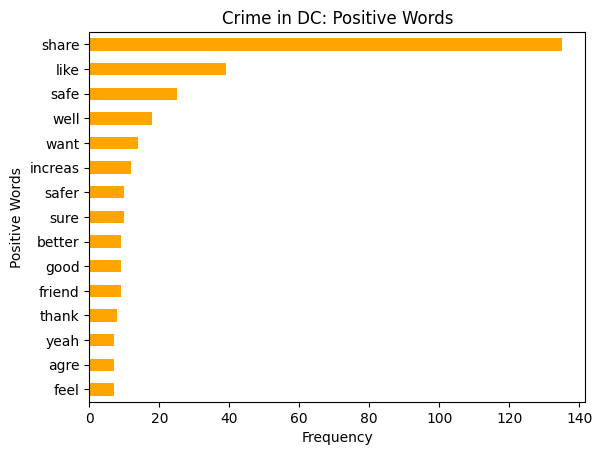
#website - url - https://www.reddit.com/r/newhampshire/comments/wafenm/is_new_hampshire_safe_for_minorities/withopen('nh_reddit.txt', 'r') asfile: nh_reddit_content =file.read()nh_reddit_content = nh_reddit_content.lower()sia = vader.SentimentIntensityAnalyzer()nh_reddit_word_token = word_tokenize(nh_reddit_content)myStopWords = stopwords.words('english')#get rid of stopwordsnh_reddit_content_nostop = [w for w in nh_reddit_word_token if w notin myStopWords]#get rid of numbersnh_reddit_cleaned = [w for w in nh_reddit_content_nostop ifnot w.isdigit()]pos_word_list = []neg_word_list = []for word in nh_reddit_cleaned: score = sia.polarity_scores(word)if score['compound'] >0: pos_word_list.append(word)elif score['compound'] <0: neg_word_list.append(word)stemmed_positive_words = [PorterStemmer().stem(w) for w in pos_word_list]most_positive_words = nltk.FreqDist(stemmed_positive_words).most_common(15)most_positive_words.reverse() #so its similiar to the graphs shownstemmed_negative_words = [PorterStemmer().stem(w) for w in neg_word_list]most_negative_words = nltk.FreqDist(stemmed_negative_words).most_common(15)most_negative_words.reverse()# Positive: horizontal bar plotdf = pd.DataFrame(most_positive_words, columns=['Positive Words', 'Frequency'])color ='orange'df.plot(x='Positive Words', y='Frequency', kind='barh', legend=False, color=color)plt.title('Positive Words')plt.xlabel('Frequency')plt.ylabel('Positive Words')plt.title('Is New Hampshire safe for minorities: Positive Words')plt.show()# Negative: horizontal bar plotdf_1 = pd.DataFrame(most_negative_words, columns=['Negative Words', 'Frequency'])color_1 ='purple'df_1.plot(x='Negative Words', y='Frequency', kind='barh', legend=False, color=color_1)plt.title('Negative Words')plt.xlabel('Frequency')plt.ylabel('Negative Words')plt.title('Is New Hampshire safe for minorities: Negative Words')plt.show()
Discussion of Results
Based on the graphs above, let’s discuss our findings. First, lets summarize what we found to be general trend for states, in terms of property and violent crimes.
The analysis of property and violent crime trends across various U.S. states reveals distinctive patterns in both peak periods and general trends. Notably, Louisiana and Missouri experienced peak property and violent crime rates during the 1990s, reflecting a significant prevalence of criminal activities during that decade. Another group of states, including Arkansas, Kentucky, and several others, witnessed peak crime rates in the 1980s to 2000s, indicating prolonged periods of heightened criminal activities. In contrast, states like Nevada, South Carolina, Georgia, and Michigan exhibited relatively stable or fluctuating crime rates, suggesting varying degrees of control over criminal incidents. Additionally, states such as Arizona, Utah, North Dakota, and Alabama displayed unique peak periods for either property or violent crimes. When considering general trends, a substantial number of states demonstrated a consistent decrease in both property and violent crime rates over the years, which shows successful efforts in crime prevention and law enforcement. Conversely, states like Arkansas (in terms of violent crimes) and Tennessee experienced an overall increase in violent crime rates, demonstrating ongoing challenges in maintaining public safety.
Next, according to our analysis and historical data, by assigning more weight/importance to violent crime (0.7) as opposed to property crimes (0.3), as human lives matter much more than any property, we found out that the safest state is the state of New Hampshire, whereas on the other hand, according to our method of analysis, historically speaking, the most dangerous state is District of Columbia.
By conducting further analysis, we found that the total property crime rate will be slightly decreasing in New Hampshire in year 2050, and the total violent rate will stay the same. In constrast, luckily our predictions show that both rates will be decreasing slightly and then stabilizing. With this in mind, it is important to note that these results were obtained using our choice of statistical method and variables, however, results may vary depending on the algorithm chosen. One can refer to the Mean Squared Error to draw their own conclusions about the accuracy of the model.
Next step of our analysis was diving into public forums to understand what people say about these states. The query googled to find the forums where the same - “safety in {state_name} reddit” and one of the articles for each state was chosen. By conducting sentiment analsysis for the forum named “Crime in DC”, we see words like “violent, victim, assault, problem” to be prevelant. This suggests that people have discussed this issues and due to the existence of the words like “violent, assault, problem, victim, scary”, we can draw conclusion that there is an actual safety problem in DC as these words are specific, meaning that people most likely discussed crime cases, talking about victim, people who were assaulted and that crime is a problem in DC. Looking at the positive words, we see “safe, like, safer, better, thank”, which suggests that DC might be getting safer and better. In contrast, if we examine the forum “Is New Hampshire safe for minorities”, we see positive words like “safe, care, free, positive, funny, sure” which suggests that people generally refer that it is a safe state for minorities. Looking at the negative words, we see words like “racist, crime, attack, murder, problem”, which may suggests that people are discussing the issues of racism, discussing about prevalence of crime and more. However, we can see that the frequency of positive words considerably exceeds the frequency of negative words, which suggests that overall, people have a good opinion about safety of minorities in New Hampshire.
Although, the choice of forums might be considered to be bias, it is important to note that with data science projects that involve humanstic content, such as cultural, social or other type of data, the completness of data and potential bias become crucial considerations. With that in mind, the choice of forums supports the findings in this particular analysis and by no means suggests that other results may not be obtained.